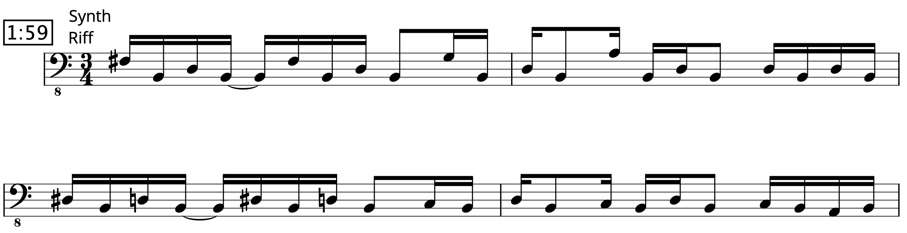
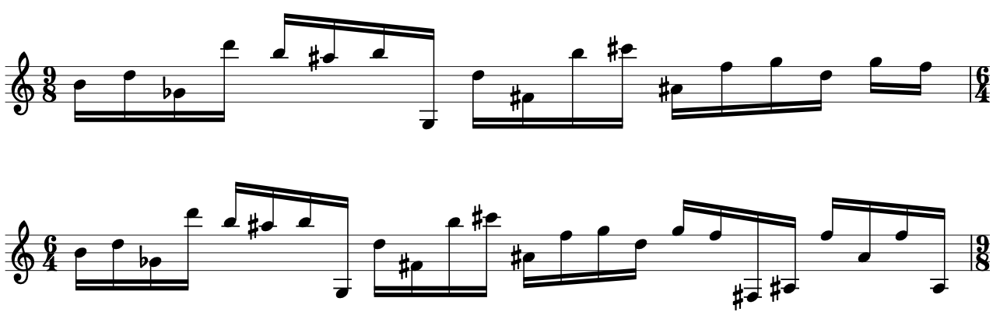

Transcription: "Odessa" — Navene Koperweis with Animals as Leaders

Today we’re looking at some Animals as Leaders.
I’m analyzing a bit of a deep cut, from their oft-forgotten second album Weightless (2011). I wasn’t tuned into Animals as Leaders when it came out, and while I suspect it got the attention it deserves when it was first released, it seems to be overlooked now. I guess it doesn’t have the excitement and spectacle of the debut (as badly produced as it was). And because this particular album lineup was so short lived, it's possible the LP has fadeded in memory for most.
The tune is “Odessa”, with Navene Koperweis on drums. Weightless is the only AAL album Navene on, with him leaving the band in the spring of 2012 when he looked to pursue different interests (and was replaced by Matt Gartska). If you read the comments on videos of Koperweis playing live with AAL (especially "CAFO"), there’s a small but noisy debate concerning who the best drummer for the group is:


It was kind of surprising for me to read the discussion, since current AAL drummer Matt Gartska is the default answer online for “Who’s a good drummer in 2020?”. If you want some transcriptions of Matt’s playing, I recommend going to his website. He’ll make more money of off you buying sheet music than he would from your Spotify minutes…
What I’ve picked apart from “Odessa” concerns a building section that proceeds the guitar solo, constructed around an awesome, catchy, syncopated riff. It’s probably one of my favorite moments of the entire AAL discography, and best of all, it's must less complicated than it sounds. Give the section a listen:
For a while, I thought the riff was built around changing time signatures, specifically an 8th note pattern of 5 + 5 + 7 + 7. Once I started transcribing, I realized it’s entirely in 3/4. Listen to the China cymbal, you’ll hear Navene hitting quarter notes. Lo and behold, 5 + 5 + 7 + 7 = 24, which is divisible by 6, the number of 8th notes in a bar of 3/4.

The riff is still pretty jagged, so the sheet music starts with the melody written in bass clef to help give you a sense of how it all lines up over the bars:
Don't ask me what key it's in because I'm not gonna tell you... Okay, I'm pretty sure it's B minor. Pretty sure.
I can't say if “implied time signature change” is a phrase that any music theorist would use. I suppose “syncopation” works just fine, no need to convolute things like drummers do. Even still, I’m sure someone has heard the track and thought “whoa sick polyrhythm bro”. Barf.
I also included the rest of the tune after the big build: the guitar solo, and then the outro. The most exciting measure is perhaps the bar of 13/16 in the solo, felt as 4 + 4 + 5; really, just 3/4 with an extra 16th note.
The time signature for the most of the outro is a bit ambiguous — backbeats and crashes seem to come in at random. The guitars can help us figure it out, and they sound like they’re playing 8th note patterns of 9 + 12. While those notes add up to 21, there’s not really an easy way to group them here, like we did with the building section. There really are some time signature changes:
Because Navene is playing steady quarters on the hi-hat, part of the pattern has him playing offbeat hi hat notes before it lines up again with the start of each phrase. It’s… a bit challenging to count.
Most confusingly, the melody might actually include bars of 12/8, but the drums sound to be playing bars of 6/4, primarily because of the steady hi-hat quarter notes. It’s the same number of notes, but different groupings. Nothing about the drums make me think they’re in 12/8, so it’s anyone’s guess what the band counted it in.
You can notice that at 3:33 Navene seems to imply a 2 & 4 feel on the 9/8 bars.
This outro seems like the opposite of our big build section; the time signature changes here are not obvious, but they are in fact there.
The pulse is a little easier to get a handle on during the last 30 seconds of the track; 5/4 with some bars of 3/8 tagged on to the end of each phrase.
"Odessa" on Spotify and Apple Music.
Posted on August 16, 2020
Tags: 2020 • Transcriptions • Navene Koperweis • Animals as Leaders